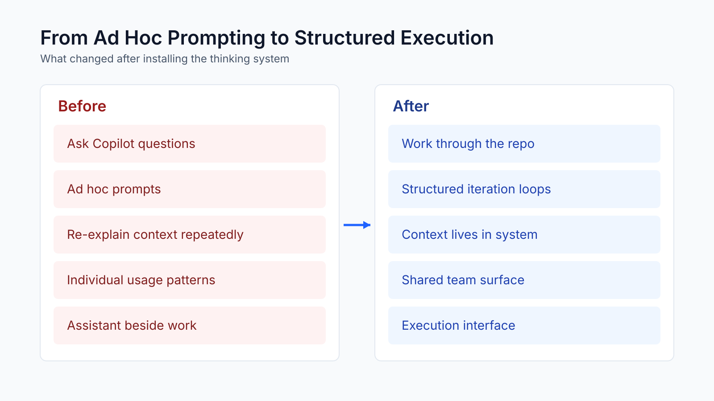
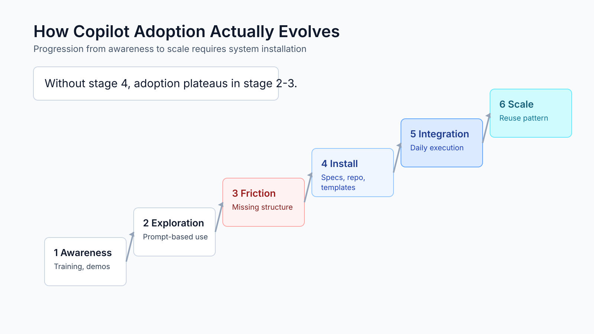
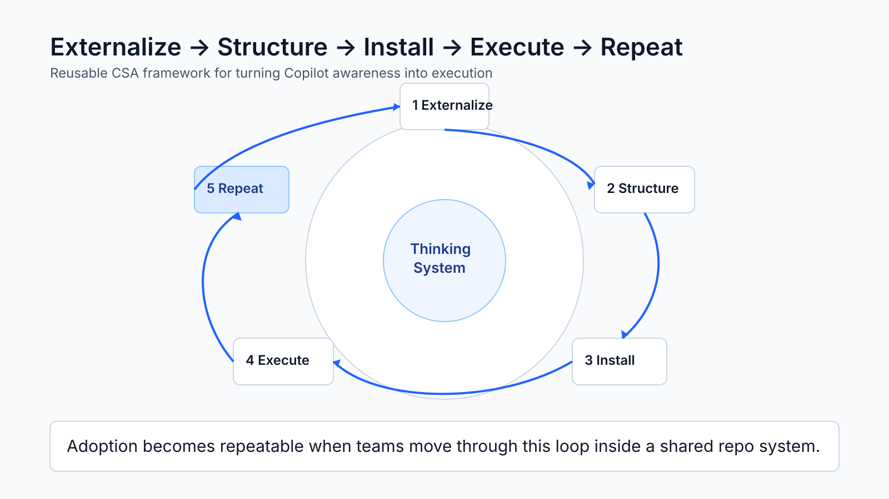

Case Study
Why Copilot Stays in Search Mode
Honeywell: from Copilot training to customer-owned AI-assisted iteration
Leadership Summary
From "AI could help" to customer-owned iteration

Bottom line: Microsoft's value was the framework, not the hand-holding. Gary is now running the pattern across two more projects on his own.
The Reality
Copilot is used like advanced search

Most of the org treats Copilot like an advanced Google search.
Bottom line: Copilot stays in Q&A mode when work has no durable system for Copilot to operate against.
The Adoption Gap
Knowing the mechanics is not running work through it
Training teaches what Copilot can do. It does not change how engineering work is executed.
The average one does not understand agents or skills.
Agents are still confusing.
Bottom line: Feature awareness is not workflow transformation.
Initial Ask
AI to help with legacy modernization
A real engineering problem, not an AI experiment.
ClearCase migration context
Reduce manual effort
Standardize execution
Enablement and Workshops
The right Microsoft motion
We responded with valuable enablement.
Advanced Copilot training
Prompt files + instructions
Agents and skills
Agentic SDLC workshop
What the Workshops Delivered
The customer learned the mechanics
The workshops showed the art of the possible — but knowing is not doing.
Notes → requirements
Requirements → issues
Issues → pull requests
Copilot across the SDLC
From Demo to Real Design
The work became concrete
Real artifacts and real constraints surfaced Honeywell's actual implementation problem.
Bottom line: This was the bridge between workshop learning and execution reality.
Implementation Friction
Getting lost at the implementation level
Direction was understood. Execution structure was missing.
At a high level this makes sense, but I am getting lost at the implementation level.
Core Insight
The problem was not training. It was the missing system.
Copilot needs a persistent system to work against.
Requirements need a home
Decisions externalized
Constraints visible
Shared context
Bottom line: Copilot becomes operational when the work becomes addressable.
Thinking System Installed
Spec-driven repo created
Instead of more training, we installed a working system.
Decisions externalized
Structured requirements
Durable Copilot context
What Changed
From ad hoc prompting to structured execution

Before
Ask questions
Ad hoc prompts
Re-explain context
Assistant beside work
After
Work through repo
Structured iteration
Context in system
Execution interface
Current State
Customer-owned iteration has started

I am specifying information specific to how we are doing things.
AI seems to be asking very relevant questions as it updates the project.
Bottom line: The framework gave the customer a way to continue without Microsoft being in every step.
Expansion Signal
The pattern is already spreading

Bottom line: This moved from a one-project artifact to a repeatable way of working.
Business Impact
This roots Microsoft AI in customer execution
For Honeywell
AI guides planning
Company context added
Relevant questions surface
Customer iterates alone
Three projects in motion
For Microsoft
Copilot → execution support
Framework partner role
Scales without us in every meeting
Customer-led expansion
Bottom line: The customer is not just using Copilot around the work — they are using AI to structure, question, update, and advance the work.
Visual Timeline
Enablement → execution → expansion

Gary is already trying the pattern on two other projects.
Adoption Model
Copilot adoption evolves through friction

Reusable CSA Framework
A repeatable motion emerged

What This Means for CSA Work
Stop at enablement and you stop short
Stop measuring
Attendance
Prompt usage
Feature familiarity
Workshop completion
Start measuring
Work in repos
Decisions captured
Copilot in execution loops
Patterns reused
Bottom line: Success metric: the team runs work through Copilot, not just beside it.
Opportunity
Standardize this as a Microsoft engagement pattern
Initial ask → enablement → real design → system install → customer-owned iteration → repeat.
Playbook
Demo-to-design templates
Spec-driven repo starters
Copilot workflow guidance
CSA coaching agent
Closing Insight
The lesson from Honeywell
Copilot remains advanced search until the work is externalized into a system the customer can run on their own.
Workshops → awareness
Real design → clarity
Thinking system → adoption
Customer-owned → impact